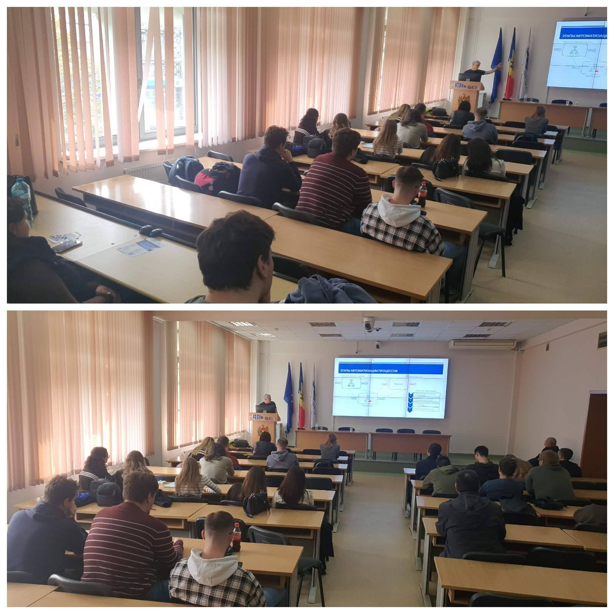
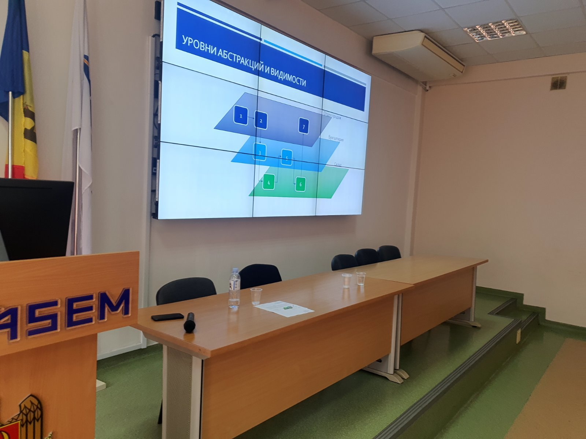
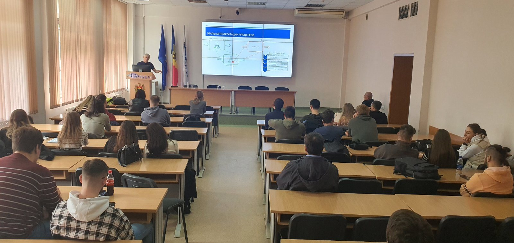

Digitalizarea Întreprinderii moldo-germane companiei Sugzucker Moldova

La data de 13.10.23 incubatorul inovațional IT4BA a organizat pentru studenții facultății TISE al ASEM , prezentarea temei
,,Digitalizarea Întreprinderii moldo-germane companiei Sugzucker Moldova,, având ca speaker Corneliu Iațco-șef a departamentului ICT, in care s-a prezentat tehnologii digitale antreprenoriale și , fluxuri informatice, diagrame UML a proceselor implementate.
 
Acest tip de workshopuri ajută studenții la formarea unei gândiri strategice, servește ca un studiul de caz pentru disciplina Proiectare SI, precum și crearea modulelor proiectelor în domeniul ERP.